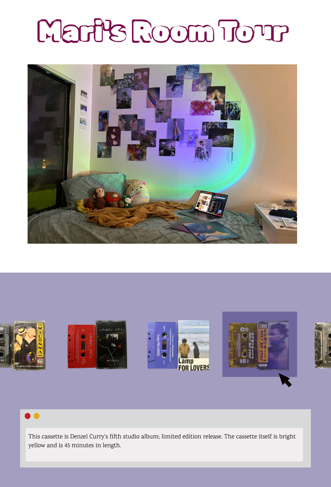
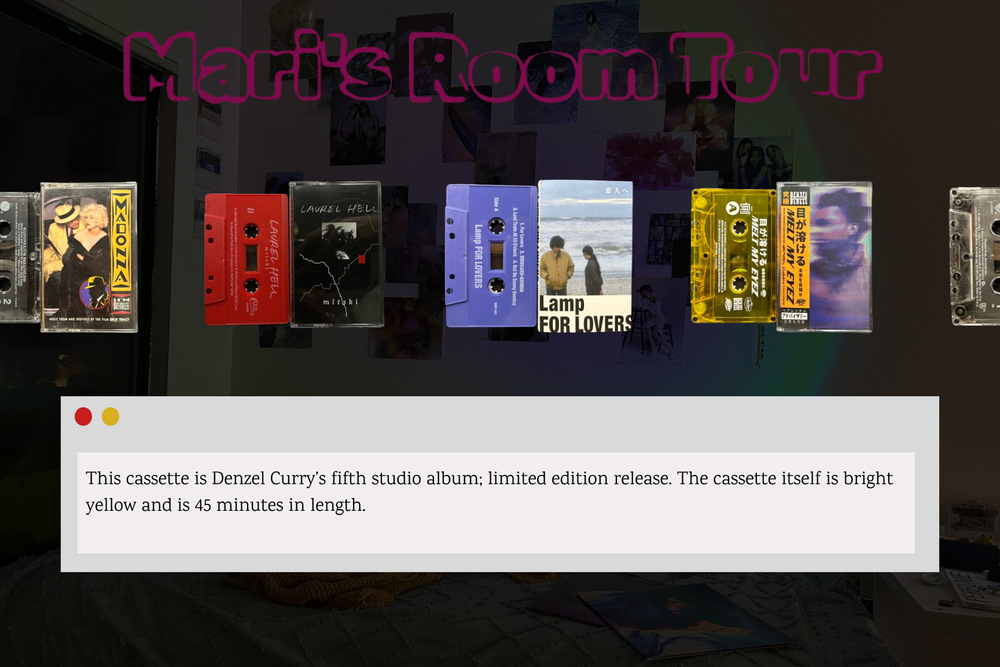

Updates
With my previous iteration of the everyPicture project, I attempted to do a room tour that showcased different aspects of my room using overlays to showcase the different aspects of the room like my stuffed animals, cassettes, etc. For this variation, I wanted to take that same idea of highlighting different collections within my room but this time focus on the different variations of physical music that I have in my room. So essentially it will be a mini archive of CD, Vinyl, and Cassettes that I have in the form of an autoplaying slideshow.
 